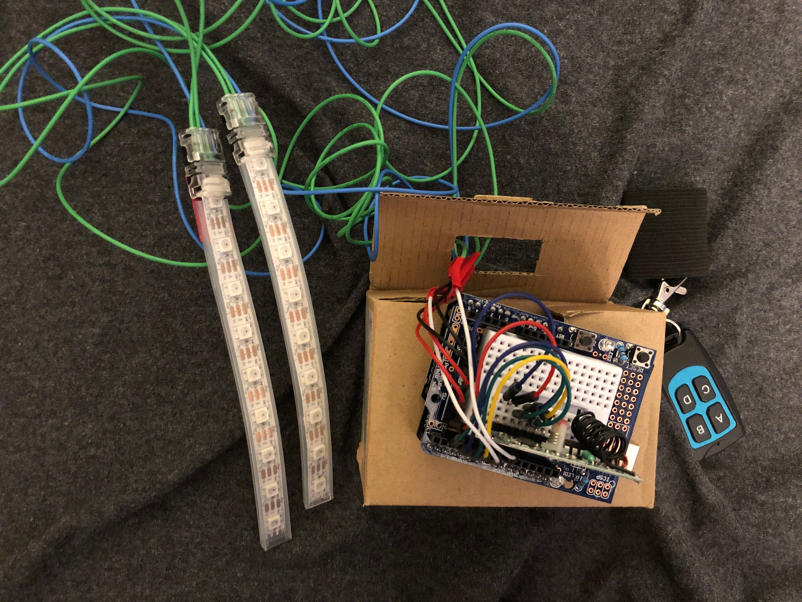
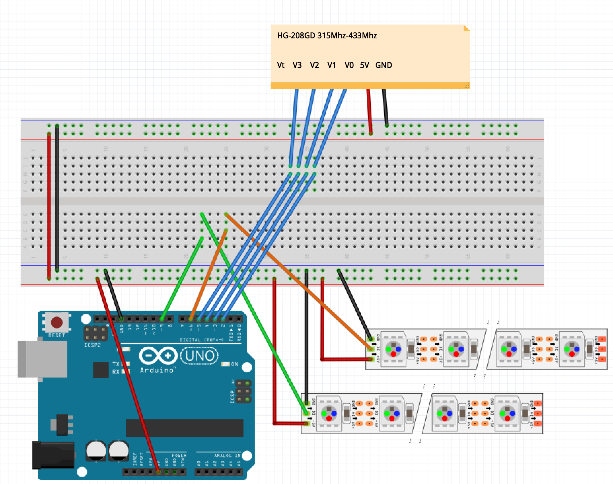
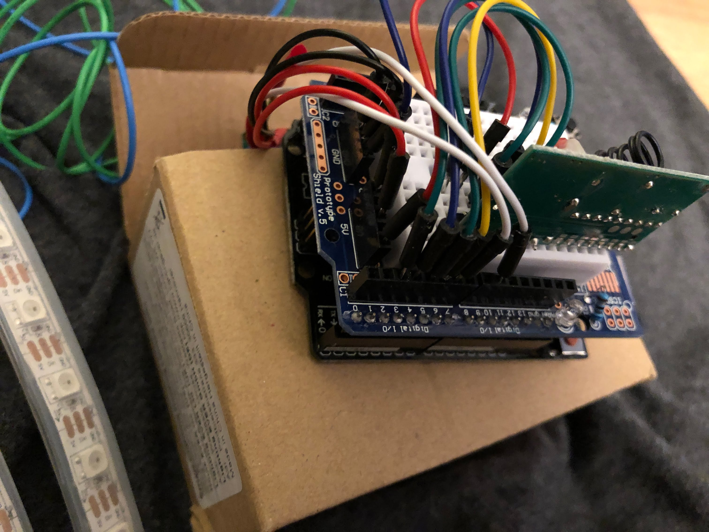
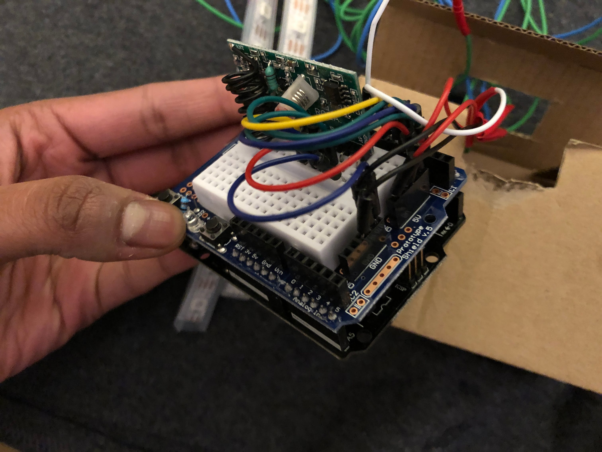
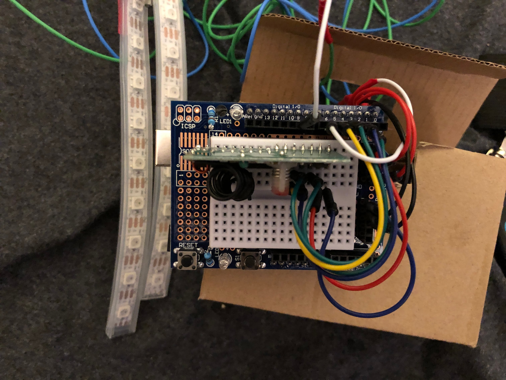
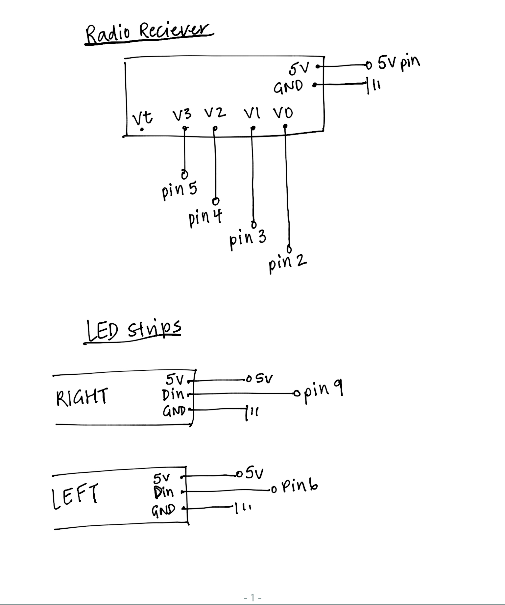

Bill of Materials:
- NeoPixel LED Strip (18 LEDs)
- Radio Reciever
- Radio Controller
- Arduino Kit (HCDE 439 Standard)
- 20 AWG wires (12 feet, 4 feet * 3 colors)
- USB connected Power Bank
Circuit demo:

Check out the link below to see the system in action! As shown in the video, clicking different buttons on the remote control will change the indicator direction and mode. Clicking on a button again will turn that mode off.
Click here for video!Circuit diagram:
This is an image with details regarding how the circuit is assembled.
 
Here are some images of how the circuit looks assembled:
  
Schematic:

This is a schematic of my circuit.
Calculations:
There was some important math to do for this project, as I chose to use the arduino's 5V pin to provide power for my entire LED setup. To take some precautions, I needed to do some math to figure out how many LEDs I could safely use. According to the Adafruit website, each neopixel uses 20 mA on average (ex. one color) and 60 mA if they are on full brightness, white light. I calculated current usage for both these cases. According to another website, the 5V pin can safely provide 500mA of current. I used 18 total LEDs, 9 for each side of the signal. 20mA per LED * 18 LED = 180 mA. This means I can safely power both my LED strips on one color, full brightness. 60mA per LED * 18 LED = 1080 mA. This is way over the 500mA cap for the 5V pin. This means I cannot turn on both LED strips at full brightness at the same time.
Code Snippet:
#include // include neopixel library
// more neopixel setup code
#ifdef __AVR__
#include
#endif
//Left LED define
#define LeftNeoPixelPin 6
#define LeftNeoPixelNo 9
//Right LED define
#define RightNeoPixelPin 9
#define RightNeoPixelNo 9
//Input pins define
#define InputBtn1Pin 2
#define InputBtn2Pin 3
#define InputBtn3Pin 4
#define InputBtn4Pin 5
int delayval = 25; // 25 ms
int PowerBankWakeUpPin = 12; // setting up power bank pin
// setting up neopixel strips
Adafruit_NeoPixel pixelsL = Adafruit_NeoPixel(LeftNeoPixelNo, LeftNeoPixelPin, NEO_GRB + NEO_KHZ800);
Adafruit_NeoPixel pixelsR = Adafruit_NeoPixel(RightNeoPixelNo, RightNeoPixelPin, NEO_GRB + NEO_KHZ800);
// initializing button values for radio receiver
int btn1State = 0;
int btn2State = 0;
int btn3State = 0;
int btn4State = 0;
boolean PowerBankPresent = true; //if power connected to power bak usb battery.
void setup() {
// NeoPixel setup code
#if defined (__AVR_ATtiny85__)
if (F_CPU == 16000000) clock_prescale_set(clock_div_1);
#endif
pixelsL.begin(); // This initializes the NeoPixel library.
pixelsR.begin(); // This initializes the NeoPixel library.
// Initalize button input
pinMode(InputBtn1Pin, INPUT); // Left turn
pinMode(InputBtn2Pin, INPUT);// Right turn
pinMode(InputBtn3Pin, INPUT);
pinMode(InputBtn4Pin, INPUT);
// Initalize NeoPixel Output
pinMode(LeftNeoPixelPin, OUTPUT);
pinMode(RightNeoPixelPin, OUTPUT);
Serial.begin(9600);
// set up power bank pin so that the powerbank always stays on
pinMode(PowerBankWakeUpPin, OUTPUT);
if (PowerBankPresent ) { // if connected to power bank usb
Serial.println("PowerBankResistor : on");
digitalWrite(PowerBankWakeUpPin, HIGH);
}
}
void loop() {
// reading the states of all the buttons to see which one is on
btn1State = digitalRead(InputBtn1Pin);
btn2State = digitalRead(InputBtn2Pin);
btn3State = digitalRead(InputBtn3Pin);
btn4State = digitalRead(InputBtn4Pin);
// LEFT turn, if button 1 state is registered as high, it will first turn all strips black, and then
// perform the turning signal indicator on the LEFT LED.
if (btn1State == HIGH) {
Serial.println("1 on");
AllStripsBlack(); // turning off all LEDs
// turning on one light at a time on the LED strip
for (int i = 0; i <= 9; i++) {
PixelRed(i, 0);
delay(delayval);
PixelBlack(i, 0);
}
} else {
AllStripsBlack();
}
// RIGHT Turn, if button 3 state is registered as high, it will first turn all strips black, and then
// perform the turning signal indicator on the LEFT LED.
if (btn3State == HIGH) {
Serial.println("3 on");
AllStripsBlack(); // turning off all the LEDs
// turning on one light at a time on the LED strip
for (int i = 0; i <= 9; i++) {
PixelRed(i, 1);
delay(delayval);
PixelBlack(i, 1);
}
} else {
AllStripsBlack();
}
// Flashing, if button 2 state is registered as high, it will turn all the LEDs on one strip to white, turn
// it off, then do the same for the other one, creating an alternating flash pattern.
if (btn2State == HIGH) {
Serial.println("Flashing");
// setting LED colors, low = off, high = white
uint32_t low = pixelsL.Color(0, 0, 0);
uint32_t high = pixelsL.Color(255, 255, 255);
AllStripsBlack(); // turning off all the LEDs
// turning on all the LEDs of one light and turning off the other
for (int i = 0; i < 9; i++) {
pixelsR.setPixelColor(i, low);
pixelsR.show();
pixelsL.setPixelColor(i, high);
pixelsL.show();
}
delay(100);
// turning on all the LEDs of one light and turning off the other, opposite of first for loop
for ( int i = 0; i < 9; i++) {
pixelsL.setPixelColor(i, low);
pixelsL.show();
pixelsR.setPixelColor(i, high);
pixelsR.show();
}
delay(100); // short delay between flashing
} else {
AllStripsBlack();
}
}
// Sides for all the following functions: 0 = LEFT, 1 = RIGHT
// based on side input, turns on red LED for left or right LED strip
void PixelRed(int i, int Side) {
switch (Side) {
case 0:
pixelsL.setPixelColor(i, pixelsL.Color(255, 0, 0)); // red
pixelsL.show();
// set lights of LEFT LED strip to all red
for (uint16_t i = 0; i < 10; i++) {
pixelsR.setPixelColor(i, pixelsR.Color(255, 0, 0));
pixelsR.show();
}
break;
case 1:
pixelsR.setPixelColor(i, pixelsR.Color(255, 0, 0));
pixelsR.show();
// set lights of RIGHT LED strip to all red
for (uint16_t i = 0; i < 10; i++) {
pixelsL.setPixelColor(i, pixelsL.Color(255, 0, 0));
pixelsL.show();
}
break;
}
}
// Sets a LED to all black
void PixelBlack(int i, int Side) {
switch (Side) {
case 0:
pixelsL.setPixelColor(i, pixelsL.Color(0, 0, 0));
pixelsL.show();
break;
case 1:
pixelsR.setPixelColor(i, pixelsR.Color(0, 0, 0));
pixelsR.show();
break;
}
}
// turns all strips all black (all lights off)
void AllStripsBlack() {
for (int i = 0; i < LeftNeoPixelNo; i++) {
PixelBlack(i, 0);
}
for (int i = 0; i < RightNeoPixelNo; i++) {
PixelBlack(i, 1);
}
}